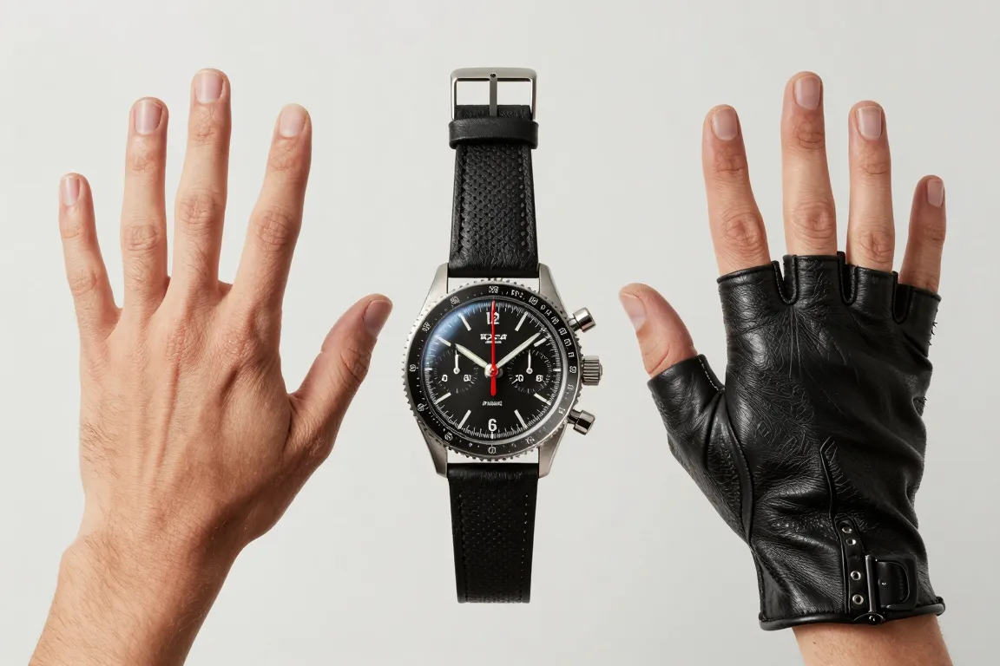

mote · 1957–now · også: Motorsport-kronograf, Takymeter-kronograf, Sjåførens ur
Uret for stoppeklokketiden i motorsporten. Det har en stålkasse, en mørk skive med to eller tre småskiver, to trykknapper og en takymeterskala. Speedmaster fra 1957 og Carrera fra 1963 satte typen.

Kjerneidé
En racing-kronograf er en stoppeklokke på håndleddet. Skiven viser medgått tid og gjennomsnittsfart med ett blikk, og kassen forblir slank nok til å passe under en mansjett.
Designprinsipper
Monter to trykknapper ved 2 og 4, slik at sjåføren starter, stopper og nullstiller tidtakeren med én hånd.
Trykk en takymeterskala fra 60 til 500 på ringen eller skivekanten. Den gir farten over én målt mil eller kilometer.
Ordne to eller tre småskiver i et balansert mønster, hver 8 til 10 mm brede, for løpende sekunder, minutter og timer.
Bruk en matt skive i sort, grått eller hvitt, med høy kontrast mot viserne og småskivene.
Skjær kassen 38 til 42 mm bred og 12 til 14 mm tykk, slik at uret passer under en kjørehanske.
Legg til et trappet safirglass eller et kuppelformet akrylglass som holder gjenskinnet lavt.
Velg en perforert lærrem, slik at håndleddet holdes kjølig i en bil.
Bruk en rød eller oransje sekundviser og én signalfarge på skiven.
Antimønstre
En enkelt småskive uten tidsskala
En takymeter i bitte liten skrift som ingen kan lese